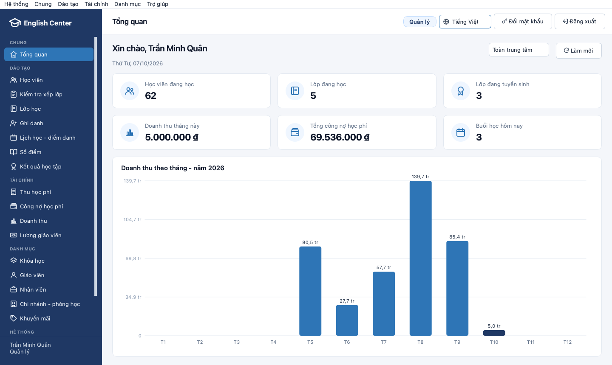

Manager
ql_quanrl_ManagerRuns the chain: overview and revenue of every branch, the catalogs (courses, teachers, employees, branches and rooms, promotions), accounts and backups.
Denied: changing the audit log, deleting a receipt.
IE103 Information Management UIT, VNU-HCM
QLTTTA (Quản lý trung tâm tiếng Anh) runs the daily work of a chain of English-language centers: students, classes and timetables, enrollment, tuition, attendance, grades, certificates and teacher payroll. Every write goes through a stored procedure and every user signs in as a real SQL Server user, so the database itself decides what each role may do.

EXEC dbo.usp_Enrollment_Create @StudentId = 'ST00012', @ClassId = 'CL0006', @EnrollmentId = @id OUTPUT;
Msg 50024The class schedule clashes with another class the student is taking.
01Overview
The grading focus of IE103 is the database, so the business rules live in SQL Server: constraints, procedures, triggers and permissions. The Qt desktop app is the presentation layer that the staff of each role use every day.
ql_quanrl_ManagerRuns the chain: overview and revenue of every branch, the catalogs (courses, teachers, employees, branches and rooms, promotions), accounts and backups.
Denied: changing the audit log, deleting a receipt.
gvu_lanrl_AcademicStaffStudents and placement tests, classes and weekly timetables, enrollments and transfers, attendance, the grade book and learning results.
Denied: reading the payroll, collecting tuition.
kt_minhrl_AccountantTuition in installments with a printed receipt, outstanding balances, revenue by month or period, and the monthly teacher payroll.
Denied: entering grades, enrolling students.
gv_johnrl_TeacherOnly their own classes, students, teaching schedule, attendance, grades and pay, through security views filtered by the signed-in teacher.
Denied: reading the student, receipt and payroll tables.
Each account is a contained database user that belongs to exactly one role; a DENY overrides any GRANT. The demo accounts above share one password, listed in docs/SETUP.md.
Students with XML import and export, placement tests, classes (open, weekly schedule, generate sessions, start, cancel, evaluate), enrollments, timetable and attendance, grade book, learning results.
Tuition collection with a printable receipt, outstanding tuition, revenue by month or period, teacher payroll (finalize, deduction, paid).
Courses and grade components, teachers, employees, branches and rooms, promotions; accounts (create, lock, reset the password) and backups.
Every list has a quick filter and a totals row, and exports to a PDF report with header and footer or to CSV that opens in Excel.
Switch the language at runtime without signing out; values stored in the database and its business messages are translated too.
A Windows setup or portable ZIP and a macOS .dmg that bundles the FreeTDS driver, built by GitHub Actions for every release.
02Product
The menu of each role is the permission matrix of the database, so a screen appears only when SQL Server would let that user run it. Pick a role to see what it works with.
Screenshots of the Vietnamese UI (the default) with the demo data, generated by tools/qlttta_screenshots. Click a screenshot to enlarge it.
03Database
Written for SQL Server 2012 and later, entirely in English: objects, stored values and business messages. The rules hold even when someone edits the data directly in SSMS, because constraints, procedures and triggers check them, not the app.
Primary and foreign keys, CHECK, UNIQUE, filtered unique indexes, defaults, and sequences that create readable IDs such as ST00001 and CL0001.
The only write path: transactions, OUTPUT parameters, THROW with business messages, safe dynamic SQL, EXECUTE AS OWNER and a recursive CTE.
usp_Student_Addusp_Enrollment_CreateScalar, inline and multi-statement table-valued functions, including the clock of the center (UTC+07:00) and the timetable clash check.
fn_Todayfn_StudentScheduleClashSet-based AFTER and INSTEAD OF triggers: no double-booked room or teacher, amount paid equals the sum of receipts, an audit trail in XML.
trg_RECEIPT_UpdateAmountPaidtrg_CLASS_SCHEDULE_CheckConflictRow-by-row processing where the course asks for it: evaluating the results of a class and closing the monthly payroll of the teachers.
usp_Class_EvaluateResultsusp_Payroll_FinalizeReporting views for balances, revenue and results, plus security views that show a teacher only their own rows.
vw_OutstandingTuitionvw_Teacher_MyClassesContained database users in four roles, object- and column-level GRANT / DENY, ownership chaining through views and procedures, an append-only audit log.
Course syllabi as typed XML validated by an XSD, teacher profiles and audit values as XML, queried with .value(), .nodes(), .modify() and FOR XML PATH.
A full, differential and log backup chain, restore with NORECOVERY / RECOVERY, and backups started from the app.
usp_BackupBULK INSERT of a CSV file, XML import through .nodes(), XML export, and CSV / PDF export of every list in the app.
Horizontal fragmentation by branch, replicated catalog tables, a distributed view and checks of completeness and disjointness.
126 database cases and 20 server-level cases: every rule, constraint and permission must be rejected for the right reason. Cases that write roll back.
The colors match the interactive data map.
Branches and classrooms, the basis of the distributed design
Office staff, teachers, and the login of each one
Programs, courses with an XML syllabus and a prerequisite, grade weights
Classes, their weekly timetable and the generated sessions
Students, placement tests, and the n-n link to classes
Promotions, receipts in installments, monthly payroll
Attendance per session, component grades, certificates
Audit trail with old and new values as XML
A selection; each one is covered by a test case that must be rejected.
No room or teacher is double-booked, and a student never attends two classes that overlap in time.
Enforced bytrg_CLASS_SCHEDULE_CheckConflictfn_StudentScheduleClashAn enrollment needs an open class with a free seat, and the prerequisite course or a high enough placement-test score.
Enforced byusp_Enrollment_Createtrg_ENROLLMENT_CheckCapacityThe amount paid always equals the sum of the valid receipts; a receipt is cancelled with a reason, never deleted.
Enforced bytrg_RECEIPT_UpdateAmountPaidtrg_RECEIPT_PreventDeleteA student passes with a final grade of at least 5 and at least 80% attendance; only a passed enrollment receives a certificate.
Enforced byusp_Class_EvaluateResultstrg_CERTIFICATE_CheckResultA taught session can no longer change its time, room or teacher, which keeps the payroll correct.
Enforced bytrg_CLASS_SESSION_LockTaughtThe audit log is append-only, even for the manager.
Enforced bytrg_AUDIT_LOG_ReadOnly and a DENYscripts/db_init builds the database from scratch with the first eight.
04Architecture
Four layers and a composition root. The dependency direction is checked twice: CMake does not link the user interface to Qt SQL, and tst_conventions reads every #include.
main.cpp, AppContainer create the layers and wire them together.
LoginDialog, MainWindow, DataPage, FormDialog, I18n
no Qt SQL, no SQL text
DatabaseManager, Sql*Repository, SqlHelpers, SqlErrorMapper
no Qt Widgets
QLTTTA: procedures, views, triggers, roles. Reached by the infrastructure through ODBC (Driver 18 or FreeTDS).
StudentService, EnrollmentService, TuitionService, Permissions; ports IStudentRepository, IClassRepository...
Student, ClassInfo, Account, Role, validation rules, Result<T>
Only src/infrastructure/repositories holds SQL. Every write calls a stored procedure, with values bound through SqlHelpers::execPrepared.
Results cross the layers as Result<T>; a database message is shown in the UI language and the form stays open.
Unit tests drive the services with fake repositories, so they run anywhere in seconds.
Students is the template: Student → IStudentRepository → StudentService → SqlStudentRepository → StudentPage.
Adding a student: the rules are checked in the app for fast feedback and again in SQL Server, the final source of truth.
StudentFormDialogAcademic staff fill in the form and click Save.
StudentService::addNormalizes the input and asks the domain to validate it.
Student::validateReturns the list of broken rules; empty means valid.
SqlStudentRepositoryRuns the procedure with bound values through ODBC.
usp_Student_AddCHECK, UNIQUE and a sequence create STxxxxx, or THROW refuses.
Result<QString>The new ID is selected, or the translated message is shown.
05Tech stack
SQL Server because the course needs procedures, triggers, cursors, authorization, backup and XQuery, and the labs use SSMS. Qt because one C++ code base gives a native app on Windows and macOS.
| Syllabus requirement | SQLite | PostgreSQL | SQL Server |
|---|---|---|---|
| Stored procedures and functions | No | Yes (PL/pgSQL) | Yes, T-SQL as in the labs |
| Triggers and cursors | Limited triggers, no cursors | Yes | Yes |
| Users, roles, GRANT / DENY | No | Yes | Yes, plus contained users |
| Full, differential and log backup | File copy | pg_dump, WAL | T-SQL BACKUP / RESTORE |
| XML with XPath / XQuery | No | XPath 1.0 only | Full XQuery |
| Tool used in class | - | - | SSMS |
06Workflow
Each member owns one area. Changes reach develop through reviewed pull requests; main receives only releases, and every release builds the installers.
scripts/test_all stops at the first failing step. CI runs the same suite on Linux against SQL Server.
Format of the changed C++ lines, commit messages, no build output or .env tracked.
Re-create the database from scratch, then run every case of 12_tests.sql.
Backup and restore, BULK INSERT, the distributed database, account lockout.
Use cases with fake repositories, tst_conventions, tst_i18n.
Every role opens every screen it may use, against the real database.
SQL_PASSWORD="$(docker exec imcp-mssql printenv MSSQL_SA_PASSWORD)" ./scripts/test_all.sh --docker imcp-mssql.\scripts\test_all.ps1| GitHub Actions | Runs on | What it does |
|---|---|---|
| Checks | pull requests into develop | Change checks, build and unit tests on Linux, no database |
| CI | merges into develop, pull requests into main | Build and unit tests on macOS and Windows; the full suite on Linux with SQL Server |
| Release | merges into main | Builds the .dmg, setup.exe and portable .zip, publishes a GitHub Release |
| Pages | merges into develop | Publishes this site and the data map |
Claude Code is allowed by the instructor. The whole team shares the same instructions (AGENTS.md, .claude/rules/), so every change has the same structure, tests and report, and each member can still explain their own part.
/imcp-setup/imcp-commit/imcp-create-pr/imcp-review/imcp-review-codebase/imcp-update-report/imcp-update-guideCommits follow Conventional Commits in English; develop and main need a pull request, an up-to-date branch and the code owner's review.
07Documentation
Both are written in Vietnamese and built by Python scripts: SQL code, the data dictionary, query results, diagrams and screenshots come from the repository and a real database, so they never drift from the code.
The design and the implementation, chapter by chapter, with the SQL extracted from the scripts and the results of the real database.
Practical, step-by-step instructions with screenshots: from installing SQL Server to every screen of every role.
In English, next to the code. The repository is private: links with a lock open for the team and the instructor.
Start here if you do not program: reading the SQL and the C++, one action from the click to the database.
SETUP.mdEnvironment on macOS and Windows, database, demo accounts, tests, installers, troubleshooting.
ARCHITECTURE.mdLayers, request flow, naming, the recipe for a new module, the multi-language UI.
DATABASE.mdDesign, object catalog, roles and permissions, mapping to the course syllabus.
CONTRIBUTING.mdBranches, conventions, the pull request checklist, working with Claude Code.
PLAN.mdSchedule up to the submission, assignments, oral-defense preparation.
README.mdQuick start, repository layout, testing and the workflows at a glance.
Data mapPublic and interactive: tables, business flow and app flow by role.
08Download
GitHub Actions builds the installers for every release and attaches them to the GitHub Release of the repository. The app needs a SQL Server that holds the QLTTTA database.
Windows 10 (version 1809 or later) or 11, 64-bit
QLTTTA-x.y.z-windows-x64-setup.exeinstaller, no admin rightsQLTTTA-x.y.z-windows-x64-portable.zipunzip and runIf SmartScreen warns you, choose More info, then Run anyway: the app is not commercially code-signed.
Latest releasemacOS 15 or later, Apple Silicon
QLTTTA-x.y.z-macos-arm64.dmgdrag into ApplicationsThe FreeTDS driver is bundled. The first launch is blocked: open System Settings › Privacy & Security and choose Open Anyway.
Latest releaseThe repository is private: the instructor is invited so they can download the release.
SQL Server in Docker on macOS, or SQL Server Express or Developer on Windows. scripts/db_init creates QLTTTA with demo data.
Run the setup, unzip the portable build, or drag QLTTTA.app into Applications.
Open Server settings on the login screen: localhost,1433 for Docker, or localhost\SQLEXPRESS.
As ql_quan, gvu_lan, kt_minh or gv_john; the shared demo password is in docs/SETUP.md.
One command installs what is missing, creates the database and runs the full test suite. In Claude Code: /imcp-setup.
./scripts/setup_dev.sh --accept-licensespowershell -ExecutionPolicy Bypass -File scripts\setup_dev.ps1 -AcceptLicenses09Team
Each member owns one area: they understand it in depth, test it, write its part of the report and answer the oral-defense questions about it. The commit history shows who did what.
Supervisor
IE103 Information Management, University of Information Technology, VNU-HCM.
Architecture and application
Clean Architecture, the Qt app, the ODBC connection and sign-in by role, CI/CD and packaging; coordination and integration.
src/ tests/ .github/ scripts/ packaging/Survey and analysis
The business processes of the center, actors and use cases, data flow diagrams, the ERD and the class diagram.
Logical model and constraints
From the ERD to relations, normalization, the data dictionary, integrity constraints and triggers.
01_tables.sql 05_triggers.sqlDatabase programming
Stored procedures, functions, cursors and transactions, SQL queries, XPath and XQuery.
02_functions.sql 04_procedures.sql 08_demo_queries.sqlSecurity and advanced models
Authentication, authorization, security views, audit, backup and restore, import and export; distributed, object-oriented and NoSQL databases.
03_views.sql 06_security.sql 09-11_*.sql